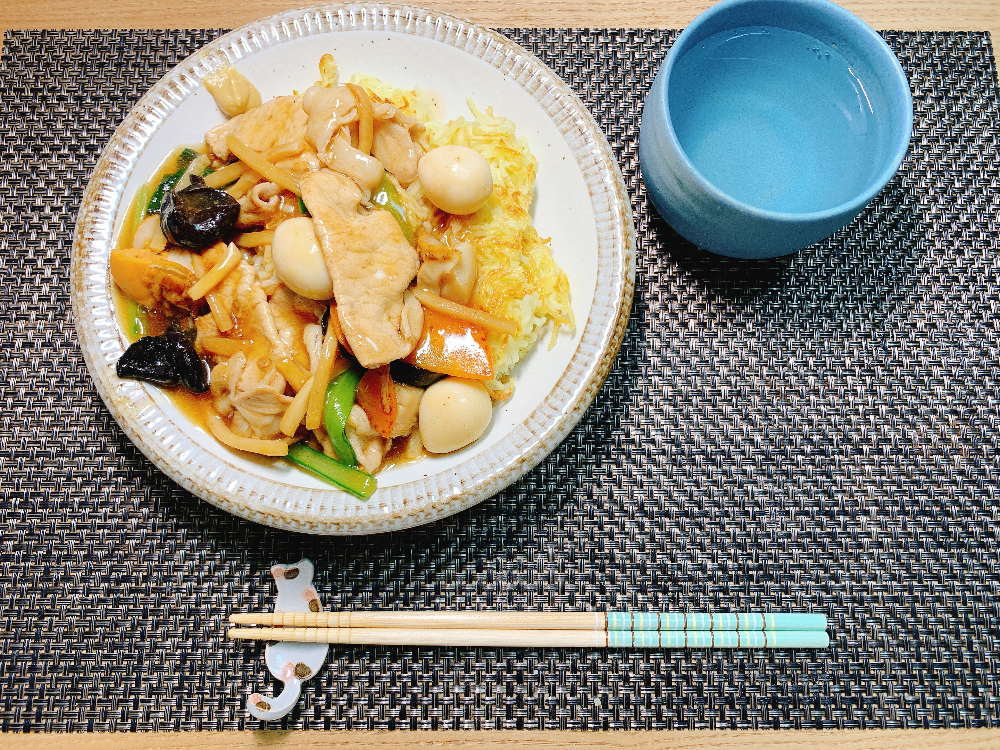

やったこと
- 新歓パンフ手引きを書いた
- 新歓パンフ devcontainer整備
- 夕ご飯作った
Gatsby厳しい、でもやらないと新歓Webで死ぬ、みたいな気持ちでやっていた。段々とCI周りは整ってきたのでクラスファイルを書かないと組版が間に合わなくなりそう。
感想
美味しかった〜〜〜〜〜。かなり上手にできた。ここ数回の自炊で一番美味しかったと思う。
昨日不調だった洗濯機はなんとか治した。今回もまた洗濯物の入れ過ぎが原因だった気がするので反省している。コツコツ片付けましょう...
焼きそばのイメージが払拭された
Gatsby厳しい、でもやらないと新歓Webで死ぬ、みたいな気持ちでやっていた。段々とCI周りは整ってきたのでクラスファイルを書かないと組版が間に合わなくなりそう。
美味しかった〜〜〜〜〜。かなり上手にできた。ここ数回の自炊で一番美味しかったと思う。
昨日不調だった洗濯機はなんとか治した。今回もまた洗濯物の入れ過ぎが原因だった気がするので反省している。コツコツ片付けましょう...